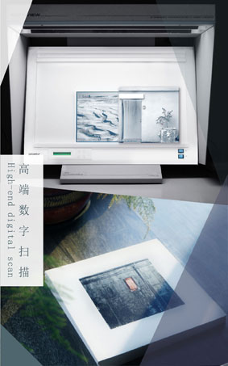

绍剑影像工作室为专业摄影师，画家以及视觉艺术家提供高端收藏级和展览级艺术微喷打印服务，优良的打 印工艺使艺术家们可以更有效的展示和销售他们的作品。为了满足不同的需求，我们的打印工坊提供多种的传统相纸,画布和艺术纸张，其中包括深受大众喜爱的德国哈林穆勒和法国康颂两大品牌。工作室通过多年的筛选， 选定的多款艺术纸张更是在其色彩宽容度上和纸张的厚度质感上赢得了拍卖机构和收藏人士的青睐。 “数码打印程序从高分辨率的数码文件开始，文件的大小对于将来的放大打印至关重要，点击察看文件大小与 打印尺寸的关系表。在输出较大尺寸图片前，我们通常会建议制作小样，当浏览过打印小样后，在你满意的前提下再输出大尺寸图片。如果在校对小样时你希望对画面进行调整，我们的技术人员回给予意见并帮助你实现影像的最佳效果。依据文件调整的工作量，包括整体色彩还原，局部色彩反差调整，色彩管理，以 及输出锐化等。。。工作室有这标准不同的收费，具体信息请来电咨询。
| 打印尺寸 （英尺） |
网络用图 72ppi |
打印质量较差 100ppi |
打印质量一般 150ppi |
打印质量较好 240ppi |
打印质量较好 300ppi |
|---|---|---|---|---|---|
| 3.5*5 | 0.09MB | 0.18MB | 0.4MB | 1.0MB | 1.6MB |
| 4*6 | 0.12MB | 0.24MB | 0.5MB | 1.4MB | 2.2MB |
| 5*7 | 0.18MB | 0.35MB | 0.8MB | 2.0MB | 3.2MB |
| 8*10 | 0.41MB | 0.8MB | 1.8MB | 4.6MB | 7.2MB |
| 8*12 | 0.5MB | 1.0MB | 2.2MB | 5.5MB | 8.6MB |
| 10*15 | 0.78MB | 1.5MB | 3.4MB | 8.6MB | 13.5MB |
| 11*14 | 0.8MB | 1.55MB | 3.5MB | 8.9MB | 13.9MB |
| 12*18 | 1.3MB | 2.2MB | 4.9MB | 12.4MB | 19.4MB |
| 16*20 | 1.7MB | 3.2MB | 7.2MB | 18.4MB | 28.8MB |
| 20*24 | 2.5MB | 4.8MB | 10.8MB | 27.6MB | 43.2MB |
| 20*30 | 3.1MB | 6.0MB | 13.5MB | 34.6MB | 54.0MB |
| 24*36 | 4.5MB | 8.6MB | 19.4MB | 49.8MB | 77.8MB |
| 注意：打印最高质量为360ppi，画面呈现细腻画质。但只有从事多年专业打印人员，能够看出其比300ppi多出的颜色层次。 | |||||